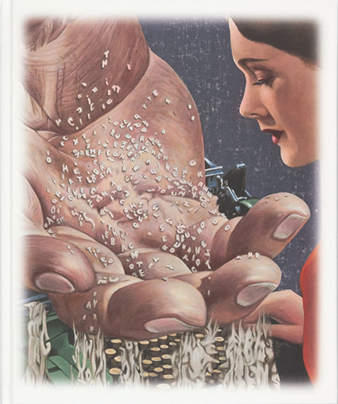

| Artist | Contributors | Title | Publication Year | |
|---|---|---|---|---|
| Helen Frankenthaler | Thomas Crow | Helen Frankenthaler: Drawing Within Nature: Paintings From the 1990S | 2023 | |
| Jenny Saville | Hope Alswang, Cheryl Brutvan, Nicholas Cullinan | Jenny Saville | 2011 | |
|  | Various | Mark Francis, Michael Newman, Charles Ray | Haunted Realism | 2022 |
| James Turrell | Miwon Kwon | James Turrell | 2011 | |
| Various | Jon Thompson | How to Read a Modern Painting | 2007 | |
| Cy Twombly | Nicola del Roscio | The Essential Cy Twombly | 2014 | |
| Zhang Xiaogang | Jonathan Fineberg and Gary G Xu | Zhang Xiaogang: Disquieting Memories | 2020 | |
| Lucian Freud | Virginia Button | British Artists: Lucian Freud | 2019 | |
| Aliza Nisenbaum | Andrea Tate | Aliza Nisenbaum: Taking Care | 2021 | |
| Lynette Yiadom-Boakye | Isabella Maidment | Lynette Yiadom-Boakye: Fly In League With The Night | 2010 |